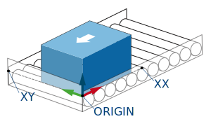

すべてのステーションにはユーザ座標系が関連付けられており、教示された経路はそのユーザ座標系に関連しています。 ユーザ座標系は、[ユーザ座標系] 選択の横にある [歯車] アイコンを押してアクセスできるスマートペンダントのインターフェイスを使用して設定できます。
適切な操作のために、供給ステーションのユーザ座標系は、右側のコンベアの端で、箱が置かれている面 (ロールの上) でティーチングする必要があります。 X 軸は入ってくる製品の流れに逆らうようにコンベアの側面に沿って配置し、Y 軸はコンベアの前面に沿って配置する必要があります。

ティーチングでは、ティーチングに使用するツールの位置を表す正しいツール番号が選択されていることを確認してください。 適切な位置に到達するのが難しい場合は、ユーザ座標系の位置に製品(箱)を配置し、製品(箱)の上でティーチングすることができます。 ティーチングが完了したら、ユーザ座標系の Z 値から製品(箱)の高さを引きます。